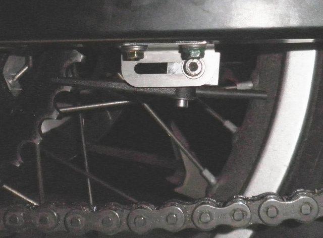

Oil Reservoir Front |
Oil Reservoir Top
Reservoir fits neatly on the LHS, resting on the radiator support bracket.
The top corner of the bottle has to be heated up and deformed to make way for the oil return hose.
A tie-wrap holds it in place using the coolant level hole. |
Pump and Junction Box
The pump and junction box attach to the inside of LHS front panel with "velcro".
The pump outlet is on the right. I changed the clamping method to strengthen it. The heatshrink supplied
wawsn't holding it tight enough.
Power and oil inlet comes from over the top of the coolant reservoir.
The cable to the controller and the oil outlet line run under the reservoir and loop up behind it.
|
First Power Source
This changed though. A better place is from the dash. (See below) |
Oil Line Top RHS |
Oil Line RHS behind the Engine |
| The oil line runs across the bike under the airbox, then back just above the bottom of the RH panel, out of site. |
then down behind the engine and through a silver metal loop that captures some other cables. |
The spout parts supplied:-
Firstly, the self drilling/tapping screws are mild steel. OK for aluminium, but won't get far in 3mm steel. So they need to be replaced with #14-10x20mm self drilling hex heads that are meant for steel.
The bracket arrangement supplied is fine if you don't mind fiddling about with an allen key and wrench whenever you adjust the chain, and hence the spout position.
You need 3 hands, one for each tool and one to position the spout.
Much easier to do it without the wrench, which means the spout bracket must be replaced with a threaded block. |
Alternative Spout Adjustment Block
One little trick here is to make sure that the M4 thread tapers out at the point just before the screw binds up and locks the oil spout.
The screw supplied is threaded all the way to the head, so if you give it too much thread it will lock the spout, and you want it to move. |

Mounted Spout
The 920 chain/sprocket is only 6mm wide, which leaves a big gap. Both nozzles must touch the sprocket faces. If they don't, oil will only feed from one side - the path of least resistance. There must be back-pressure for oil to feed evenly on both faces. To adjust the spout gap, in Arnold's own words,
"You can bend the legs easily when you heat them up gently with a lighter. Best practice is to slide in a piece of wire first. In case of overheating you will not end up with a blocked nozzle.
It is even possible to fix a broken nozzle this way: slide in a piece of wire between the broken parts, warm both ends with a lighter untill the ends just start to melt. Then join the broken parts and wait a few secs for the material to harden.
Then pull out the wire"
The only things I did differently, was I used a heat gun instead of a flame, and I used copper wire. |
Mounted Spout from below
I trimmed about 3 mm off the side of the swingarm bracket so that it wouldn't extend beyond the swingarm.
See the drain hole I put in the swingarm? It needs to be 10 mm further right. The solid piece welded into the end of the swingarm extends further into the hollow arm than I guessed !#! |
Pump feed tube
Instead of using tie wraps to hold the oil feed tube in place, I used the same idea as on the Tornado. A 6.5mm OD steel fuel line, bent to follow the contours over the swingarm and held in place with two P-clips. The feed line runs inside it.
In the plan view, the left end is the wheel end.
|

Delivery tube below tank
Two ally P-clips at different angles hold the tube in place. |
Feed tube under swing arm to control tube
The completed oil delivery line.
|
The Controller Mount
A simple bent piece of 0.8 mm sheet steel from an old PC case, stuck to the nacelle with double sided sponge tape. |
Controller from the Side
|
Controller from the Rider's Viewpoint
|
Sensor Pulse Converter Circuit
I assumed that the sensor was an inductive type, which would have a sinusoidal output,
but it turns out that output is a rectangular wave from 2.0 to 4.2 V, when plugged into the dash. So it's not inductive, or, for that matter, a Hall type. Perhaps it's magneto-resistive ?
No matter, the signal needs a bit of massaging so that it swings above and below 1.25V for the Pro-Oiler
to see it. A simple comparator will do the trick with it's reference set to 3.1V. Some low pass filtering to get rid of ignition noise, and supply protection in case of a load dump, and the job's
done. The circuit needs 12V, so that may as well be passed onto the Pro-Oiler. My earlier source of power from above the engine becomes superfluous.
A vero board lashup is working for now, but a proper pcb will be designed shortly.
|
Wiring Completed & Lines Primed
ATF is more than adequate for the lubrication job. The red matches the Husky :)
|
Reservoir Filled and Ready For Action
I picked up 5 litres of used ATF from a tranmission repairer. They had 200 litre drums of it and were happy to give it away. It does need to be filtered though, in case of any suspended metal, but an old air cleaner did the job.
|